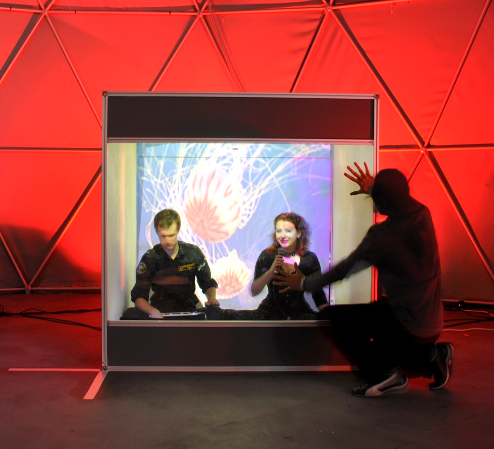

Art - Technology - Good Hackathon
John Shearer
A tiny bit about me
intLab
Interactive Technologies Lab <Lincoln>
openLab / Culture Lab
humanaqurium

nightingallery

A tiny bit about some previous hackathons
the kinds of relationships that our Hackathons have created and work that they’ve led to
What is a Hackathon?
Philosophy
Fundamentally about relationships
Building things is only one of many outputs
new ideas
new collaborations
new skills/techniques
..
Technology as tools
technology as tools and tools for expression, rather than ends in themselves
walk through idea testing for storyTrails/Droplets
just used a mobile phone - WoZ
what kinds of outputs are appropriate
What do you want to get out of this?
???
Our focus / theme
putting the user first
user experience led
also exploring cultural and creative ideas - putting technology in the service of that, in the design process
interests?
what you are interested in, generally, rather than what you are working on right now
the wider set of things you’re interested in - the 50+ list
summary
how you can use creative practices and engagement with technologies to create positive social impact
where do you think you can create positive social impact?
brings it back to the "user", then ask how
Processes and Practicalilties
Ideation and idea selection
a big part of the process
always a challenge with a variety of people
especially when we don’t really know each other
(though that’s half the point)
Suggested approach
Talk a bunch during morning Tea
trying to find ideas of interest between people
Write loosely formed ideas on paper
unfiltered
Go around and mark ideas you find interesting
Vote with our feet
Notes
keep it grounded in the kinds of relationships that our Hackathons have created and work that they’ve led to
talk about me a little
talk about philosophy of hackathons? and the process - some kind of framing and framework for the two days
process for ideation and idea selection **
talk about thinking about technology as tools and tools for expression, rather than ends in themselves
walk through idea testing for storyTrails/Droplets
just used a mobile phone - WoZ
what kinds of outputs are appropriate
Group sizes and skills distribution
want cross-discipline interaction
people having opportunity to work with other kinds of people and processes.
generate new ideas, new creative collaborations, and to seed the ground for amazing new work: prototypes, designs, or artworks. The only remit for the work is that it makes someone’s life better: by solving a problem, helping a user or a group to overcome a challenge - or by creating something beautiful!
— Art/Technology/Good Hackathon! https://www.eventbrite.com.au/e/hackathon-registration-25945248938?utm_term=eventpage&invite=MTAzMDk2MzcvanNoZWFyZXJAbGluY29sbi5hYy51ay8w&utm_campaign=inviteformalv2&utm_source=eb_email&utm_medium=email&ref=enivtefor001
what’s important to individuals?
making something that is good for someone
— Sue Swinburne
asdf
putting the user first
user experience led
also exploring cultural and creative ideas - putting technology in the service of that, in the design process
tension
being guided by technologies afford
but still user led
some artificial constraints?
at least for ideation?
themes - perhaps Art; Techonlogy; Social Change/Good
what present in people’s minds now (whatever now means)
what things people seen or heard of etc recently
what you are interested in, generally, rather than what you are working on right now
the wider set of things you’re interested in - the 50+ list
how you can use creative practices and engagement with technologies to create positive social impact
where do you think you can create positive social impact?
brings it back to the "user", then ask how